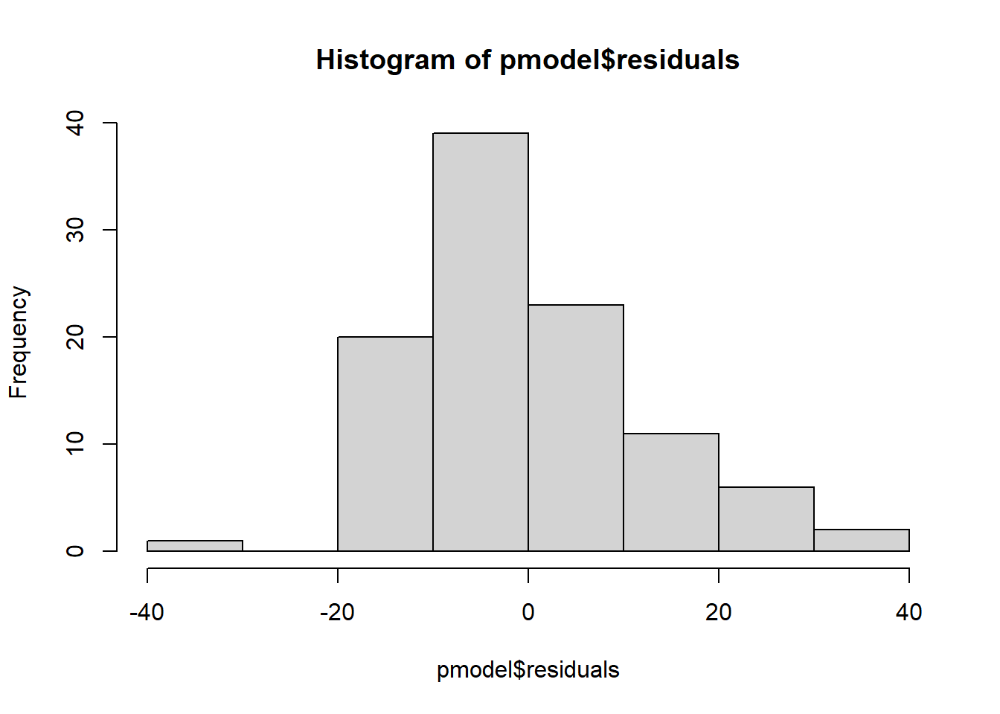
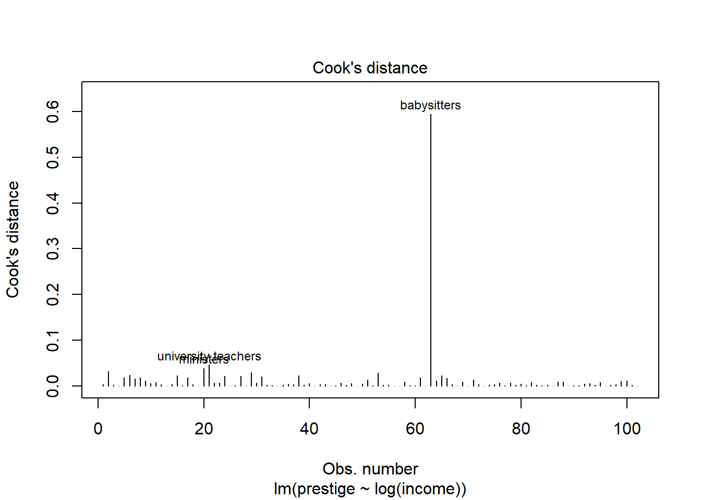
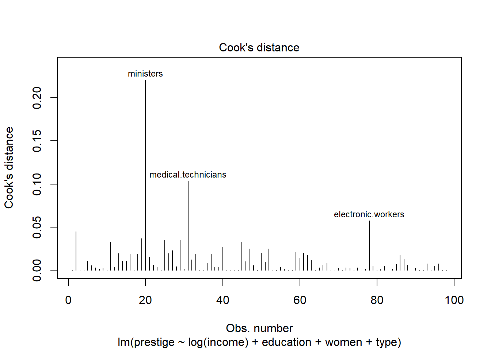
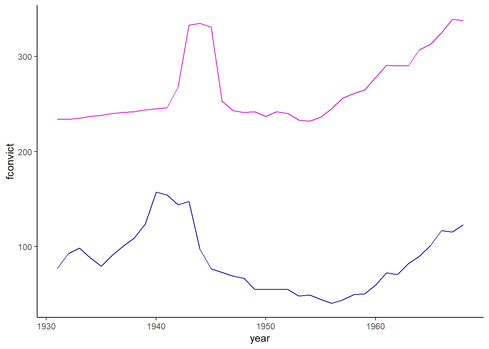
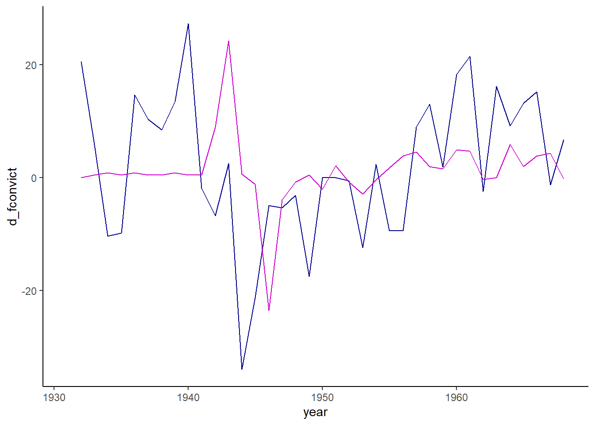

We will use the Prestige and Hartnagel datasets from the car package, and the emissions dataset from Canvas.
Packages
tidyverse
ggplot2
lmtest
carData
car
skedastic
nortest
Grade
At the end of the demonstration, there is an assignment for you to do with different data.
Load in Data
We will use a few datasets in this lab. For the demonstration, we will use the Prestige data from the carData package. This data has the prestige of various occupations based on a survey from the 1960s, the average income of people with the occupation, and the average education of people with the occupation. We will also run a regression with the data.
data(Prestige)pmodel <-lm(prestige ~ income, data = Prestige)summary(pmodel)
Call:
lm(formula = prestige ~ income, data = Prestige)
Residuals:
Min 1Q Median 3Q Max
-33.007 -8.378 -2.378 8.432 32.084
Coefficients:
Estimate Std. Error t value Pr(>|t|)
(Intercept) 2.714e+01 2.268e+00 11.97 <2e-16 ***
income 2.897e-03 2.833e-04 10.22 <2e-16 ***
---
Signif. codes: 0 '***' 0.001 '**' 0.01 '*' 0.05 '.' 0.1 ' ' 1
Residual standard error: 12.09 on 100 degrees of freedom
Multiple R-squared: 0.5111, Adjusted R-squared: 0.5062
F-statistic: 104.5 on 1 and 100 DF, p-value: < 2.2e-16
Jobs with higher income generally have higher prestige. For every dollar increase in income, prestige increases by 0.0029. Let’s test the regression assumptions:
Assumption 1: Linearity
Our first assumption is that x and y have to be linearly related. To test this, we can either plot the relationship between x and y, or we can use the Ramsey RESET test, which tests the null hypothesis that the relationship between x and y is linear.
ggplot(Prestige) +geom_point(aes(x = income, y = prestige)) +theme_classic() +xlab("Income") +ylab("Prestige")
The p-value for the RESET test is very small, which means we can reject the null hypothesis that income and prestige are linearly related.
Assumption 2: Normality of Errors
The second assumption is that errors are normally distributed, because otherwise the t-tests are not appropriate for hypothesis testing. Note that this does not mean that all the variables have to be normally distributed. Graphically, we can test this by visually observing a histogram of the residuals, or we can do an Anderson-Darling test for normality, which tests the null hypothesis that the distribution is normal.
hist(pmodel$residuals)

nortest::ad.test(pmodel$residuals)
Anderson-Darling normality test
data: pmodel$residuals
A = 1.0777, p-value = 0.00757
The histogram is slightly right skewed, and the p-value for the Anderson-Darling test is 0.008, which is quite significant. The residuals are not normally distributed.
Assumption 3: Homoskedasticity
The homoskedasticity assumption says that the variance of the error term is the same at all values of X. The intuition behind why this is bad is that if there are different errors at different values of x and the model has heteroskedasticity, there is a pattern in the errors that could be modeled, so there is another estimator that will do a better job of modeling than least squares.
To test for heteroskedasticity, plot the fitted values versus the residuals to see the residual at each predicted value of y. This will give overall heteroskedasticity for the model, though you can also do heteroskedasticity for each of the x variables by plotting the x value versus the residuals.
The numerical test is the white test for heteroskedasticity in the skedastic package, which tests the null hypothesis that the errors are homoskedastic.
# A tibble: 1 × 5
statistic p.value parameter method alternative
<dbl> <dbl> <dbl> <chr> <chr>
1 8.10 0.0175 2 White's Test greater
The White test rejected the null hypothesis, meaning the errors are heteroskedastic.
Addressing unmet assumptions
Since the model did not meet any of those assumptions, we need to figure out how to make the model better. Income is usually a right-skewed variable that we think of in percentages, so we should take the log of income. I’m going to make a new model with log of income instead of income, and do the same tests as above.
pmodel2 <-lm(prestige ~log(income), data = Prestige)# Linearityggplot(Prestige) +geom_point(aes(x =log(income), y = prestige)) +theme_classic() +xlab("Log Income") +ylab("Prestige")
# A tibble: 1 × 5
statistic p.value parameter method alternative
<dbl> <dbl> <dbl> <chr> <chr>
1 2.91 0.234 2 White's Test greater
The relationship between the log of income and prestige is more or less linear (visually but not statistically), and there is no longer heteroskedasticity (both visually and statistically). The errors do not look normally distributed, but when we have large sample sizes, this usually doesn’t notably impact results. The second model is much better than the first and likely is good enough.
Assumption 4: Low Multicollinearity
When we do analysis with multiple variables, they cannot be too closely correlated, or we will get strange results.
To test this, we calculate variance inflation factors, which run regressions predicting each of our explanatory variables with the other explanatory variables. The \(R^2\) of each of those regressions is put into the following formula: \(1/(1-R^2)\). For instance, if our primary regression is predicting prestige using log of income, education, the percent of the occupation that is women, and the type of occupation, then the variance inflation factor for log income would be the \(1/(1-R^2)\) for the regression: \[ log(income) = \beta_0 + \beta_1*education +\beta_2*\%women+\beta_3*type \] R does this for us automatically with the vif() function from the car package. We should look closely at any variables where the VIFs are above 8 or 10 and consider removing one or making an index.
pmod3 <-lm(prestige ~log(income) + education + women + type, data = Prestige)summary(pmod3)
Call:
lm(formula = prestige ~ log(income) + education + women + type,
data = Prestige)
Residuals:
Min 1Q Median 3Q Max
-13.8762 -4.0579 0.5503 4.2129 16.6400
Coefficients:
Estimate Std. Error t value Pr(>|t|)
(Intercept) -115.67219 18.80181 -6.152 1.96e-08 ***
log(income) 14.65518 2.31151 6.340 8.42e-09 ***
education 2.97384 0.60205 4.940 3.49e-06 ***
women 0.08382 0.03223 2.601 0.0108 *
typeprof 5.29186 3.55585 1.488 0.1401
typewc -3.21599 2.40654 -1.336 0.1847
---
Signif. codes: 0 '***' 0.001 '**' 0.01 '*' 0.05 '.' 0.1 ' ' 1
Residual standard error: 6.44 on 92 degrees of freedom
(4 observations deleted due to missingness)
Multiple R-squared: 0.8654, Adjusted R-squared: 0.8581
F-statistic: 118.3 on 5 and 92 DF, p-value: < 2.2e-16
car::vif(pmod3)
GVIF Df GVIF^(1/(2*Df))
log(income) 3.400339 1 1.844001
education 6.405871 1 2.530982
women 2.392123 1 1.546649
type 6.801055 2 1.614894
None of the variance inflation factors are above 10, so we don’t need to worry about taking any of the variables out.
Assumption 5: No influential points
If you have outliers in your dataset, they can seriously affect regression outcomes because the regression line can swing widely to try to capture that value. If there are outliers causing problems in our data, we may want to adjust our dataset, though not always. Finding influential values and outliers can sometimes reveal errors, or unfortunate coding decisions like indicating missing values with 999,999. You can fix those. Alternatively, you may find that taking the log or otherwise transforming the data will reduce outliers. One option that can be helpful is to use percentiles rather than levels, for instance with income.
To test for influential points, we can look at the scatterplot and see if there are any points that look like outliers and appear to change the relationship. Alternatively, we can use the Cook’s distance, which measures the influence of each value on the fitted values. There is also a visualization built into R to visualize Cook’s distance. If the Cook’s distance is greater than 0.5, we should look into the data point, and if it is greater than 1, then it is likely influencing our results. We’ll start with the second model.
cooks <-cooks.distance(pmodel2)which(cooks >0.5)
babysitters
63
plot(pmodel2, which =4)

Babysitters have higher prestige than would be anticipated by their income. Babysitters typically are young, and may still be in school, so we might consider removing them from our model if those are not the kind of workers we are interested in. Let’s try again with the model with more predictors.
cooks <-cooks.distance(pmod3)which(cooks >0.5)
named integer(0)
plot(pmod3, which =4)

When we add the other predictors, none of the Cook’s distances are greater than 0.5, and we do not need to worry about outliers.
Assumption 6: Independence of errors
To explore independence of errors, we are going to use a different dataset that uses time series data, which is usually more susceptible to issues. The Hartnagel dataset has male and female crime rates, female labor force participation, female education, and fertility in Canada from 1931 to 1968. We will test whether female labor force participation is related to crime rates. We will also test for autocorrelation (non-independence of errors) using the Durbin-Watson tests, which tests the null that there is no autocorrelation.
data("Hartnagel")crime <- Hartnagel # Rename the dataset something easierrm(Hartnagel)crime_model <-lm(fconvict ~ partic, data = crime)summary(crime_model)
Call:
lm(formula = fconvict ~ partic, data = crime)
Residuals:
Min 1Q Median 3Q Max
-37.971 -22.224 -8.449 15.112 79.129
Coefficients:
Estimate Std. Error t value Pr(>|t|)
(Intercept) 0.7671 37.8094 0.020 0.9839
partic 0.3159 0.1410 2.241 0.0313 *
---
Signif. codes: 0 '***' 0.001 '**' 0.01 '*' 0.05 '.' 0.1 ' ' 1
Residual standard error: 31.15 on 36 degrees of freedom
Multiple R-squared: 0.1224, Adjusted R-squared: 0.09805
F-statistic: 5.022 on 1 and 36 DF, p-value: 0.03128
ggplot(crime) +geom_line(aes(x = year, y = fconvict), color ="darkblue") +geom_line(aes(x = year, y = partic), color ="magenta3") +theme_classic()

dwtest(crime_model)
Durbin-Watson test
data: crime_model
DW = 0.19748, p-value < 2.2e-16
alternative hypothesis: true autocorrelation is greater than 0
The model suggests that there is a weak relationship. However, when we look at the graph, they aren’t exactly related, and there are other things going on, like WWII during the 1940s, that probably explain the movements together. Since there is significant autocorrelation, let’s add a lag and also try percent change.
# Add lagcrime_mod <-lm(fconvict ~ partic +lag(fconvict), data = crime)summary(crime_mod)
Call:
lm(formula = fconvict ~ partic + lag(fconvict), data = crime)
Residuals:
Min 1Q Median 3Q Max
-45.802 -6.593 -1.820 7.843 33.344
Coefficients:
Estimate Std. Error t value Pr(>|t|)
(Intercept) 15.89678 16.51370 0.963 0.343
partic -0.04105 0.06741 -0.609 0.547
lag(fconvict) 0.95563 0.07529 12.693 1.87e-14 ***
---
Signif. codes: 0 '***' 0.001 '**' 0.01 '*' 0.05 '.' 0.1 ' ' 1
Residual standard error: 13.38 on 34 degrees of freedom
(1 observation deleted due to missingness)
Multiple R-squared: 0.8469, Adjusted R-squared: 0.8379
F-statistic: 94.02 on 2 and 34 DF, p-value: 1.399e-14
dwtest(crime_mod)
Durbin-Watson test
data: crime_mod
DW = 1.2751, p-value = 0.004195
alternative hypothesis: true autocorrelation is greater than 0
# Do % changecrime <- crime |>mutate(d_fconvict =100*(fconvict -lag(fconvict))/lag(fconvict),d_partic =100*(partic -lag(partic))/lag(partic))crime_mod2 <-lm(d_fconvict ~ d_partic, data = crime)summary(crime_mod2)
Call:
lm(formula = d_fconvict ~ d_partic, data = crime)
Residuals:
Min 1Q Median 3Q Max
-35.957 -7.174 -0.411 10.647 25.404
Coefficients:
Estimate Std. Error t value Pr(>|t|)
(Intercept) 1.7267 2.1725 0.795 0.432
d_partic 0.3277 0.3501 0.936 0.356
Residual standard error: 12.97 on 35 degrees of freedom
(1 observation deleted due to missingness)
Multiple R-squared: 0.02442, Adjusted R-squared: -0.003451
F-statistic: 0.8762 on 1 and 35 DF, p-value: 0.3557
dwtest(crime_mod2)
Durbin-Watson test
data: crime_mod2
DW = 1.1768, p-value = 0.003673
alternative hypothesis: true autocorrelation is greater than 0
ggplot(crime) +geom_line(aes(x = year, y = d_fconvict), color ="darkblue") +geom_line(aes(x = year, y = d_partic), color ="magenta3") +theme_classic()

While the lag and percent change model both do not find a relationship between labor force participation and crime, there is still significant autocorrelation according to the Durbin-Watson test. This is what makes time-series analysis so challenging: we often would need to include lags of errors and more than one lag of the outcome variable.
How important are regression assumptions?
Ordinary least squares (OLS) regression, what we’ve been learning, is fairly robust to unmet assumptions. It’s good practice to do the tests and make sure none of the assumptions are wildly unmet, and to test different specifications of your model to see if things change. However, if your model doesn’t pass all of the statistical tests, but you’ve done the work to make it the best it can be, you are probably good to go. Just be transparent when you discuss the issues with your model.
Assignment
Now it’s your turn to test the assumptions for a different analysis. Perform the following and put your results in a Word document or the text box on Canvas. Try to do
Load the emissions data.
Subset the data to only 2018 using dplyr’s filter.
Run a model to predict emissions using GDP per capita.
Perform plots and tests to test for linearity, normality of errors, and homoskedasticity. Report your results and what you should do.
Run a test for influential points. Are any points problematic? What should you do?
Run a model predicting emissions using GDP per capita, population, and continent. Test for multicollinearity. Are any of these a problem?
Reload the data and subset the data to USA for all years. Perform the model predicting emissions using GDP per capita, and use a Durbin-Watson test to test for autocollinearity. Then try again using a lag.